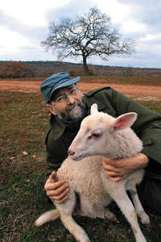

A grisignana continua la produzione come ai tempi del popolo di pastori
 Chi scende l'antica via Flavia, che taglia in verticale l'Istria interna, procedendo da Buie verso Visinada noterà, arrivato nella valle del fiume Quieto, un piccolo paesino arroccato su un cocuzzolo. E' l'antico borgo di Grisignana, oggi Groznjan. Dall'alto dei suoi 228 metri l'antica Graeciniana, fortezza romana e poi avamposto della Serenissima Repubblica di Venezia, classico esempio di borgo fortificato dell'Istria interna, domina la valle sottostante e i suoi pascoli. Siamo nell'Istria centrale, ancora ricca di boschi e praticelli: inospitale per l'allevamento dei bovini, ma ideale per le più piccole, umili pecore, che per duemila anni sono state l'unica fonte di latte e carne per la gente: i buoi servivano solo per trainare l'aratro. E Grisignana è stata per secoli la meta finale per i pastori che d'inverno si calavano dagli altopiani del Monte Maggiore, sferzati dalla bora, alla ricerca di pascolo sotto gli ulivi dei dolci pendii della campagna buiese. Erano i Cici, una popolazione di origine rumena. Fuggiti secoli prima davanti all'incalzare dei turchi, che parlavano una lingua di origine dacia incomprensibile anche ai croati, facevano i pastori e i carbonai, e del mare non sapevano nulla: tant'è che ancora oggi a Trieste, per dire di uno che non sa fare una cosa, si dice che "Cicio non xe per barca". Ancora nel 1940, nella sola Ciceria, si contavano ottomila pecore di razza istriana, un ceppo di origine siriana selezionatosi geneticamente nel corso dei secoli: bestia tuttofare, da lana, da carne e da latte. La transumanza iniziava dopo San Martino e si concludeva il primo di maggio, e si poteva effettuare solo se in possesso di contratti stipulati per il pascolo in pianura. I Cici lasciavano l'altipiano all'alba, per guadagnare la pianura in giornata attraverso particolari sentieri. Ogni pecora portava un campanaccio (la "slape") e aveva un nome: Zelenka, Pika, Skaba, Roska... Non poteva mancare il cane, un "sarplaninac" dal pelo giallognolo, di taglia bassa e le orecchie pendule. Un altro frutto della selezione millenaria, di cui è andata persa ogni traccia: del resto dei seimila "Cici" censiti fra le due guerre ne sono rimasti sì e no 700, con un'età media di 65 anni. Ecco perchè il pecorino istriano è diventato una rarità che però, per fortuna, qualche volonteroso e lungimirante allevatore produce ancora, senza bisogno di condurre la vita nomade del pastore di un secolo fa. A Grisignana, che merita una visita anche a prescindere dal formaggio, un gruppo di appassionati sostenitori e cultori delle tradizioni che fa capo al circolo di cultura istro-veneta "Istria," assieme al Comune organizza in primavera sotto l'antica Loggia municipale una degustazione di pecorini prodotti nella zona. L'avvenimento però è saltuario: ma chi volesse andare da solo alla ricerca del pecorino istriano potrà avere ancora maggiori soddisfazioni. Basta armarsi di una buona carta ai 100.000 per orientarsi nel labirinto di strade e tratturi dell'Istria interna e di un po' di pazienza: la costanza sarà premiata.
A Muzici, una frazione di Grisignana, Elio e Palmina Stokovac, ad esempio, allevano una trentina di pecore di razza istriana. La loro famiglia produce pecorino da sempre, ma quasi esclusivamente per uso domestico: se capitate da loro saranno ben felici di farvelo assaggiare, ma non ne fanno commercio. Potete tentare con più speranze a Grobine di Verteneglio, da Miro Radossevic, che ha un gregge di razze incrociate o all' "Agrolaguna" di Tar (Torre di Parenzo), che è una cooperativa con un gregge di oltre mille capi di ceppo istriano incrociato con la pecora sarda. Ma qui la produzione è già di tipo semi-industriale. Più sicura un'altra meta, poco distante da Grisignana: l'agriturismo "Goli Vrh" (Montenudo), poco fuori Materada (il paese di Fulvio Tomizza), sulla strada che da Buia porta a Umago (tel. ++385 (0) 52 730207). Qui troverete Branko Maglica, che con l'esclusivo aiuto della signora Ivonne, di un pastore e di una vicina manda avanti una fattoria-agriturismo che sembra l'Arca di Noè. La cascina, ristrutturata da Branko 18 anni fa, sorge isolata su una collinetta: tutt'intorno solo prati a pascolo, boschi e campi dove vengono coltivati mais e orzo per nutrire, assieme al fieno, le bestie nei mesi invernali. Un particolare: i campi sono lavorati da Branko che li concima solo con il letame della sua stalla. In poche parole: da lui mangerete un pecorino identico a quello che mangiava suo trisnonno. I tavoli sono pochi, le camere per gli ospiti solo un paio: è una meta fuori dai grandi flussi turistici, conosciuta solo dagli appassionati.
Le pecore sono circa 150, di una razza che Branko chiama con orgoglio "istriana migliorata". A forza di incroci con la awashy e la frisona olandese per migliorare la resa in carne e favorire i parti gemellari, ma anche con la palestinese e la sarda per migliorare la produzione di latte, Branko ha ottenuto una pecora che produce fino a due litri di latte al giorno, ma dà anche ottimi agnelli da carne, più grossi di quelli istriani d'un tempo, ma non grassi. Telefonando per la prenotazione, si può mangiare l'agnello intero allo spiedo nelle panche sotto il gelso o nella saletta interna (nei mesi freddi), vicino al fuoco che crepita nel caminetto.
Il pecorino viene prodotto dai primi di febbraio a ottobre: poi Branko si rifiuta di sfruttare troppo le sue amate pecore e le lascia in pace nell'ovile, a prepararsi per il parto primaverile. Nei nove mesi di produzione il piccolissimo caseificio (artigianale, ma lindo e funzionale) produce all'incirca venti quintali di pecorino in forme dai due ai quattro chili. Quelle più piccole asciugano prima, quelle più grandi conservano la pasta morbida più a lungo. In ogni caso, le forme escono dalla saletta di stagionatura dopo due mesi, non prima.
"Faccio un formaggio più simile al pecorino romano che a quello sardo, troppo salato e piccante. Il mio invece è saporito, ma a pasta semidura, da mangiare e non da grattuggiare. E con un'alta percenutale di grasso, anche il 60 per cento". Inutile cercare tracce di conservanti o altro: Branko, convinto ecologista, come rifiuta i concimi artificiali così rifiuta gli "aiuti" della chimica nel caseificio: il suo pecorino si fa solo col caglio e il sale. E se tutto va come deve il risultato è unico: un formaggio che si scioglie in bocca sviluppando tutti i profumi del pascolo istriano, ricco di piante e erbe aromatiche, specialmente se a giugno riuscite a trovare il pecorino prodotto col latte munto in aprile, il più profumato. Tecnicamente, quello di Branko è un pecorino dolce a pasta semicotta. Un lavoraccio che Branko fa più per passione che per guadagno. D'inverno il magazzino è vuoto, ma da aprile le prime forme saranno pronte per gli ospiti, che possono anche portarsene una a casa (l'anno scorso lo vendevano a 12 euro al chilo). E c'è anche la ricotta, prodotta ogni due giorni, ogni volta che si fa il formaggio.
Un "cugno" di pecorino istriano, formaggio dolce, si accosta per contrasto molto bene col vino Terrano con alto grado di acidità, ma vanno altrettanto bene la Malvasia istriana o il Moscato secco di Momiano. Se poi al formaggio viene abbinato pane di campagna, non più fresco, che abbia maturato una punta di acido, i contrasti tra i singoli cibi e le bevande faranno reciprocamente risaltare le loro rispettive principali caratteristiche. Insomma, sentirete in bocca i profumi della campagna istriana, gli stessi di un secolo fa.

Der Schafskäse aus Istrien
In Grisignana stellt man ihn noch wie zur Zeit des Schäfervolkes her
Wer die alte Via Flavia, die das istrische Binnenland von Norden nach Süden durchschneidet, von Buie Richtung Visinada befährt, der bemerkt auf Höhe des Quieto-Tals ein kleines Dörfchen, das sich auf einem Berggipfel verschanzt. Es handelt sich um Grisignana, das antike Graeciniana und heutige. Von der Höhe seiner 228 Meter beherrscht dieses klassische istrische Wehrdorf, das einst römische Festung und später Vorposten der Durchlauchtigsten Republik Venedig war, das darunterliegende Tal mit seinen Weiden. Hier gibt es noch viele Wiesen und Wälder, die sich zwar nicht zur Rinderzucht eignen, wohl aber zur Aufzucht der kleineren, bescheidenen Schafe, die 2000 Jahre lang die einzige Milch- und Fleischquelle der Einheimischen waren; Ochsen dienten nur dazu, den Pflug zu ziehen. Grisignana war jahrhundertelang das Ziel für die Hirten, die im Winter von den Hochebenen des Monte Maggiore herunterkamen, gepeitscht von der Bora, auf der Suche nach Weiden unter den Olivenbäumen der sanften Hänge der Gegend um Buie. Die Hirten waren Cici, ein Volk rumänischen Ursprungs, das Jahrhunderte zuvor vor den vorrückenden Türken geflohen war und eine Sprache dakischen Ursprungs sprach. Sie waren Hirten und Köhler, vom Meer verstanden sie nichts; in Triest bekommt deshalb jemand, der nichts zustande bringt, noch heute zu hören: "Ein Cicio taugt nicht fürs Boot". Noch 1940 wurden allein in der Ciceria 8.000 istrische Schafe gezählt, eine Rasse syrischen Ursprungs, die sich über die Jahrhunderte genetisch herausgebildet hatte und Woll-, Fleisch- und Milchlieferant in einem war. Die Transhumanz begann nach Sankt Martin und endete am 1. Mai, und sie war nur dem erlaubt, der im Besitz von Weiderechten in der Ebene war. Im Morgengrauen verließen die Cici die Hochebene und erreichte das Flachland. Jedes Schaf trug ein Glöckchen ("slape") und hatte einen Namen: Pika, Skaba... Natürlich durfte der Hund nicht fehlen, der "sarplaninac," eine kleine Rasse mit gelblichem Fell und Schlappohren, die ebenfalls das Ergebnis jahrtausendelanger Selektion war, heute aber verschwunden ist. Auch die 6.000 "Cici," sind heute auf nur noch rund 700 zusammengeschmolzen – bei einem Durchschnittsalter von 65 Jahren. Das ist einer der Gründe, warum der istrische Schafskäse zur Rarität geworden ist. Zum Glück aber wird er von einigen fleißigen und weitsichtigen Züchtern noch hergestellt, allerdings ohne das Nomadenleben des Hirten vor hundert Jahren führen zu müssen.
In Grisignana, organisiert der Verein "Istria," der sich der Bewahrung der Traditionen und des istro-venetischen Kulturerbes verschrieben hat, gemeinsam mit der Kommune im Frühjahr unter der alten Gemeindeloggia eine Verköstigung von Schafskäsen aus der Gegend. Leider findet das Ereignis nur unregelmäßig statt; wer nach dem istrischen Schafskäse forscht, der mache sich daher besser auf eigene Faust auf die Suche, es gibt noch größere Schätze zu entdecken. Alles, was es dazu braucht, ist eine Karte im Maßstab 1:100.000, um sich im Labyrinth der Straßen und Feldwege Inneristriens zurechtzufinden, und ein wenig Geduld: Die Beharrlichkeit wird belohnt werden.
In Muzici zum Beispiel, einem Ortsteil von Grisignana, halten Elio und Palmina Stokovac rund dreißig istrische Schafe. Ihre Familie stellt seit je Schafskäse her, allerdings nicht für den Handel, sondern fast ausschließlich für den Eigenbedarf; Besucher lassen sie aber mit Freuden probieren. Bessere Aussicht besteht in Grobine di Verteneglio bei Miro Radossevic, der eine Herde gemischtrassiger Schafe hat, oder bei "Agrolaguna" in Tar (Torre di Parenzo), einer Kooperative mit einer über tausendköpfigen Herde, die aus istrischen und sardischen Schafen gekreuzt wurde. Hier jedoch erfolgt die Produktion schon auf halbindustriellem Niveau.
Sehr erfolgversprechend ist, ganz in der Nähe von Grisignana, auch der Bauernhof "Goli Vrh" (Montenudo) gleich außerhalb von Materada (der Heimat des Schriftstellers Fulvio Tomizza), an der Straße von Buie nach Umago (Umag, Tel. ++385 (0) 52 730207). Hier führt Branko Maglica nur mit Unterstützung seiner Frau Ivonne, eines Hirten und einer Nachbarin einen Bauernhof mit Fremdenverkehr, der an eine Arche Noah erinnert. Das Bauernhaus, das Branko vor 18 Jahren umgebaut hat, erhebt sich isoliert auf einem kleinen Hügel: ringsum nur Weiden, Wälder und Felder, auf denen Mais und Gerste angebaut werden, die neben Heu als Winternahrung für die Tiere dienen. Die Felder werden von Branko nur mit Dung aus seinen Ställen grdüngt. Kurz: bei ihm kann man einen Pecorino essen, der noch genauso schmeckt wie der, den sein Ururgroßvater gegessen hat. Es gibt nur wenige Tische und auch nur ein paar Gästezimmer. Der Hof liegt abseits der großen Touristenströme, er ist nur wenigen Eingeweihten bekannt. Die Schafe, etwa 150 an der Zahl, gehören einer Rasse an, die Branko voller Stolz "verbesserte istrische Rasse" nennt. Durch Kreuzungen mit dem Awashy- und dem westfriesischen Schaf für mehr Fleischerzeugung und Zwillingsgeburten einerseits und dem palästinensischen und sardischen Schaf zur Steigerung der Milchmenge andererseits hat Branko ein Tier gezüchtet, das bis zu zwei Liter Milch am Tag gibt, aber auch erstklassige Lämmer hervorbringt, die größer als die istrischen sind, aber nicht mehr Fett ansetzen. Wer telefonisch vorbestellt, bekommt auf den Bänken unter dem Maulbeerbaum oder (in den kalten Monaten) neben dem prasselnden Kaminfeuer im Gastraum sitzend ein ganzes Lamm am Spieß serviert. Der Pecorino wird zwischen Anfang Februar und Oktober produziert: Branko weigert sich, seine geliebten Schafe zu sehr auszubeuten, und lässt sie den Winter über friedlich im Stall stehen, wo sie Kraft für das Gebären im Frühjahr sammeln können. In den neun Monaten der Produktion erzeugt die winzige Käserei (ein reinlicher, funktionaler Betrieb, wo alles von Hand gemacht wird) rund zwanzig Zentner Pecorino in Formen à 2-4 kg. Die kleineren trocknen zuerst, die größeren bleiben länger weich. In jedem Fall verlassen die Formen den Reifungskeller nach zwei Monaten, nicht früher. "Ich mache einen Schafskäse, der mehr dem römischen ähnelt als dem sardischen, der zu salzig und scharf ist. Meiner ist zwar würzig, aber halb weich, er ist zum Essen da, nicht zum Reiben. Und sie unterscheiden sich im Fettanteil, der bei mir bis zu 60% erreichen kann." Nach Konservierungsstoffen oder Ähnlichem sucht man hier vergeblich: Als überzeugter Öko-Bauer lehnt Branko nicht nur Kunstdünger ab, sondern auch die "Hilfsmittel" der Chemie in der Käseproduktion: Sein Pecorino wird nur aus Lab und Salz hergestellt. Und wenn alles gut geht, erhält er ein prächtiges Erzeugnis: einen Käse, der im Mund schmilzt und alle Aromen der kräuterreichen istrischen Wiesen entfaltet, ganz besonders im Juni, wenn der Pecorino aus der würzigen Aprilmilch die Käserei verlässt. Fachmännisch ausgedrückt stellt Branko einen halbgekochten Pecorino dolce her. Eine beschwerliche Arbeit, die Branko mehr aus Leidenschaft denn um des Verdienstes willen betreibt. Im Winter ist das Lager leer, doch ab April warten die ersten Formen auf die Gäste, die den Käse auch käuflich erwerben können (vergangenes Jahr kostete das Kilo 12 Euro). Außerdem gibt es Ricotta, der jeden zweiten Tag zusammen mit dem Käse gemacht wird. Ein Stück vom istrischen Pecorino dolce passt als Kontrast sehr gut zu Terrano, einem Wein mit hohem Säuregehalt, doch es darf auch ein istrischer Malvasia oder der trockene Momjaner Muskateller sein. Reicht man dann noch nicht mehr ganz ofenfrisches Landbrot, das ein klein bisschen säuerlich schmeckt, zum Käse, so heben die Kontraste zwischen den einzelnen Speisen und Getränken deren wichtigsten Charakteristiken gegenseitig hervor. Kurz: Der Gaumen schmeckt, unverfälscht wie vor hundert Jahren, die ganze Aromenvielfalt der istrischen Campagna.
Livio Missio
March 21, 2004
© 2004 Papageno